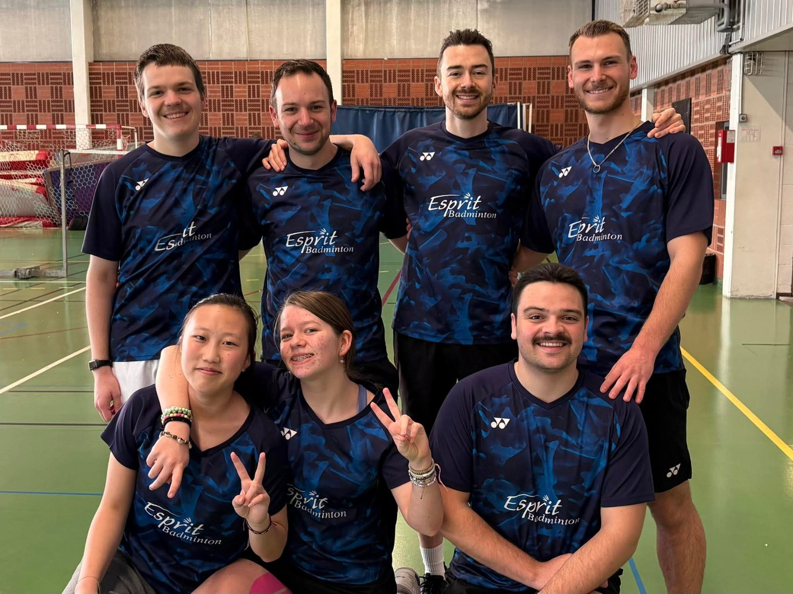

Je m'appelle Julien Duquesne, étudiant en Bac+5 MOPL (Manager des Opérations, Processus et Logistique) à l'ISTELI Wasquehal, en alternance chez LSI (Groupe Delquignies), sous-traitant de Texdecor.
Mon parcours a commencé sur le terrain — préparation de commandes, colisage, expédition, inventaire — avant de monter en compétences vers le management des opérations. Cette progression m'a donné une conviction simple : une amélioration n'a de valeur que si elle est applicable par les équipes qui la vivent au quotidien.
Ce qui m'intéresse, c'est de rendre les opérations plus simples et plus fiables : gagner du temps, fiabiliser les stocks et réduire les coûts, sans compliquer le travail des opérateurs.
À terme, je souhaite évoluer vers un poste de gestionnaire de stock ou dans l'amélioration continue. J'aime fiabiliser les données, organiser les flux et repérer les leviers concrets qui rendent l'entrepôt plus performant au quotidien.
Lys-lez-Lannoy · Hauts-de-France
Mes valeurs
Trois principes qui guident ma manière de travailler.
Respect
Des personnes, des procédures et des normes de sécurité. La performance durable se construit sur la confiance des équipes.
Rigueur
Données fiables, suivi précis des stocks, ponctualité. La rigueur est la condition d'une décision juste.
Amélioration continue
Toujours questionner l'existant pour gagner du temps et de la valeur, par petites itérations concrètes.
En dehors du travail
Le badminton, mon terrain de discipline.
Je pratique le badminton depuis mes 15 ans et j'évolue aujourd'hui en compétition au niveau interclub D1 avec Hem Badminton.


Engagement associatif
Bénévole et impliqué au sein de Hem Badminton.
Au-delà de la compétition, je m'investis dans la vie du club — sur le terrain comme dans son organisation. Je suis membre du bureau de Hem Badminton.
Encadrement
J'entraîne, en remplacement ou en renfort, les groupes adultes débutants ainsi que les groupes jeunes.
Membre du bureau
Je participe aux décisions et aux votes qui orientent la vie et les projets du club.
Site E-Bad & Badnet
Je gère le site E-Bad du club et le suivi Badnet pour les compétitions.
Buvette
Je participe à l'organisation et à la gestion de la buvette lors des rencontres et événements.
En complément
La musculation, depuis 2 ans.
Un entraînement régulier qui développe l'explosivité, la puissance et l'endurance — un socle physique important pour moi.